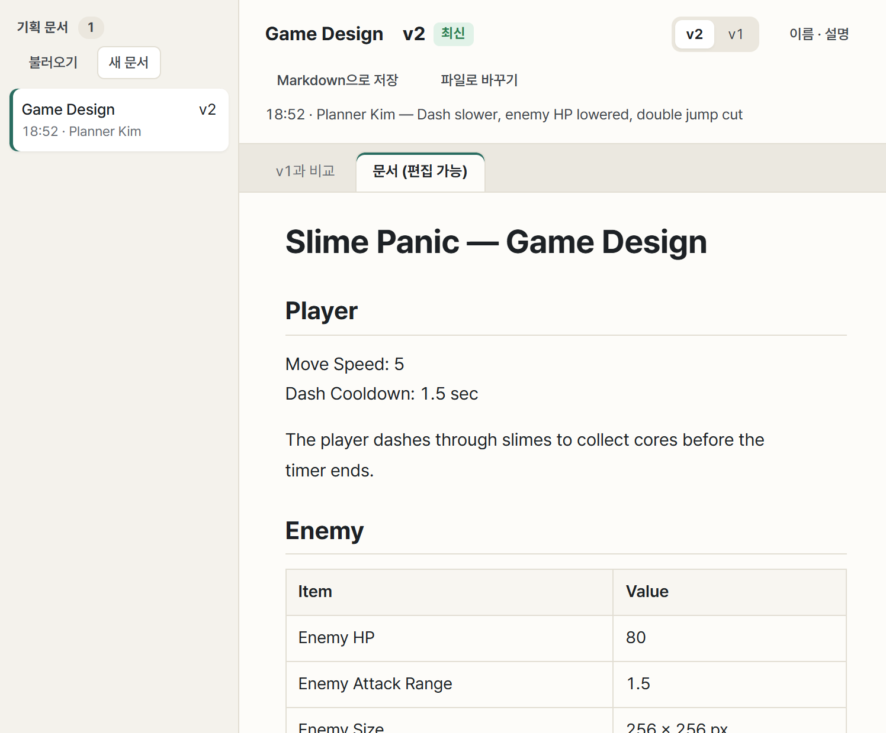
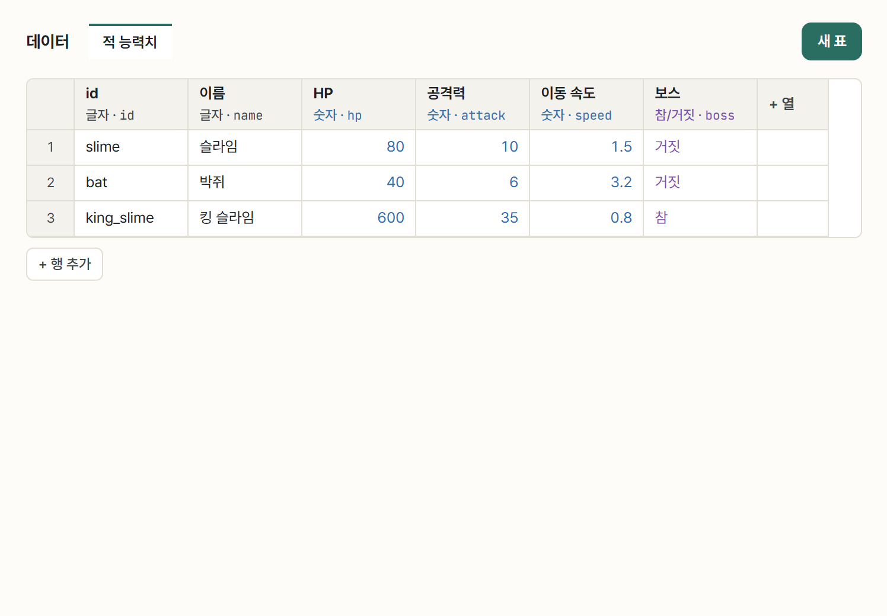
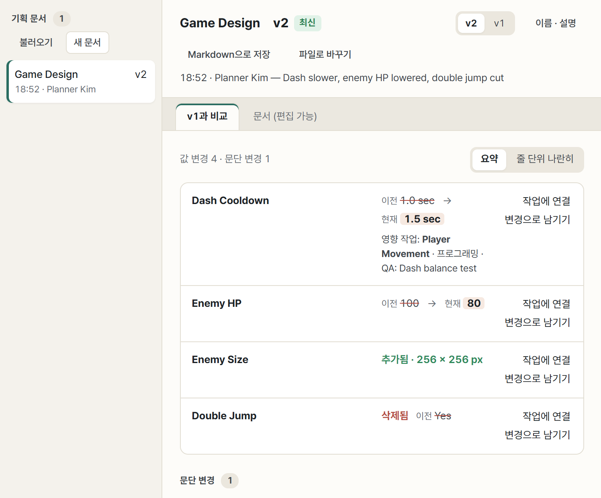

기획자
기획서를 쓰고, 그 내용을 카드와 아트 요청으로 바꿔 팀에 나누고, 바뀐 것을 빠짐없이 전합니다.
시작
- 같은 Wi-Fi에서 방 코드로 참가하고 역할 기획을 고릅니다. PM을 겸하면 함께 고르세요.
회의 → 기획서
- 기획 → 새 문서에서 템플릿을 고릅니다. 기본 템플릿과 호스트가 받은 템플릿 팩이 함께 나옵니다.
- 기획서는 제목 단위로 여러 사람이 동시에 고칩니다. 내가 ‘전투’ 절을 고치는 동안 다른 사람은 ‘UI’ 절을 고칠 수 있습니다.
- 상태도·흐름도는 도식, 분위기는 무드보드, 엑셀처럼 쓸 표는 기획용 시트로 만듭니다.


디자인 가이드 · 레퍼런스
- 아티스트와 함께 디자인 가이드(색, 분위기, 해야 할 것·하지 말 것)를 씁니다.
- 참고 이미지는 레퍼런스에 끌어 놓고 태그를 달아 관련 카드에 연결합니다. 같은 그림은 한 번만 올라갑니다.
카드와 아트 요청
- 카드에는 제목만이 아니라 왜 필요한가, 쓰이는 곳, 규격, 결과물, 다음에 넘길 사람을 적습니다. 받는 사람이 열자마자 일을 시작할 수 있게요.
- 그림이 필요하면 에셋 슬롯(아트 요청)을 만듭니다. 아트 보드에 카드가 생기고, 파일 이름은 여기서 정합니다. 아티스트는 이름을 신경 쓰지 않아도 됩니다.
- 보드 위의 일정(기획 확정, 1차 플레이 가능, 아트 마감, 최종 빌드)으로 전체 흐름을 맞춥니다.
수치 기획 (데이터 표)
- 밸런스 값은 데이터 화면의 표에 적습니다. 엑셀·CSV를 불러와도 됩니다.
- 표는 엔진용 JSON으로 바로 나갑니다. 프로그래머가 데이터 업데이트를 누르면 게임에 들어갑니다.
- 값을 고치면 ‘누가, 언제, 이전 → 새 값’이 남습니다.


기획 변경을 팀에 전하기
- 기획서를 고치면 이전 버전과 비교에서 바뀐 값만 모아 볼 수 있습니다.
- 각 값 옆의 변경으로 남기기를 누르면 기획 변경 기록이 됩니다. 영향받는 역할에 알림이 가고, ‘반영 중 → 반영 완료’까지 따라갑니다.
- 작업에 연결로 그 값을 쓰는 카드를 이어 두면, 담당자가 무엇을 고쳐야 하는지 바로 압니다.


결과물 검토와 플레이
- 내가 요청한 그림이 준비 완료가 되면 승인하거나, 이유와 함께 수정 요청을 보냅니다. 수정 요청은 그림을 아티스트에게 돌려보냅니다.
- 빌드가 올라오면 PLAY로 실행하고, 게임 중 Ctrl Shift Q로 스크린샷과 함께 문제를 보고합니다. 기획 의도와 다른 점도 남기세요.
틈틈이 기록
- 기획은 카드로 남지 않는 일이 많습니다(회의 정리, 조율, 플레이 테스트). 문제해결기록 → 작업 일지에 한 줄씩 남기세요.
- 막혔던 기획 문제(예: “난이도 곡선이 2스테이지에서 꺾임”)도 문제 해결로 남기면 좋은 포트폴리오 재료가 됩니다.
마감
- 크레딧에 맡은 일을 적고 팀원 확인을 받습니다. 서로 한마디도 남기세요.
- 포트폴리오 받기: 맡은 일, 작업 하이라이트, 반영된 기획 변경, 문제 해결, 팀원이 본 나가 담긴 HTML을 받습니다.
AI와 함께
왼쪽 메뉴 AI에서 내 Codex·Claude를 연결하면 “○○의 AI”로 함께 일합니다. 바꾼 것은 모두 기록되고 한 번에 되돌릴 수 있습니다. 도구 묶음은 기획.
| 언제 | AI에게 | 사용량 아끼기 |
|---|---|---|
| 회의 직후 | “회의 메모로 기획서 ‘핵심 루프’ 절 써 줘” | 새 대화로 시작 |
| 카드 정리 | “규격이 빈 카드만 채워 줘” | 범위를 좁혀서 |
| 전체 점검 | “카드 전체 검토해 줘” | 필요할 때만 |
| 회의 메모 → 카드 | “이 메모로 카드와 아트 요청 만들어 줘” 준비 중 | 만들기 전에 목록 확인 |